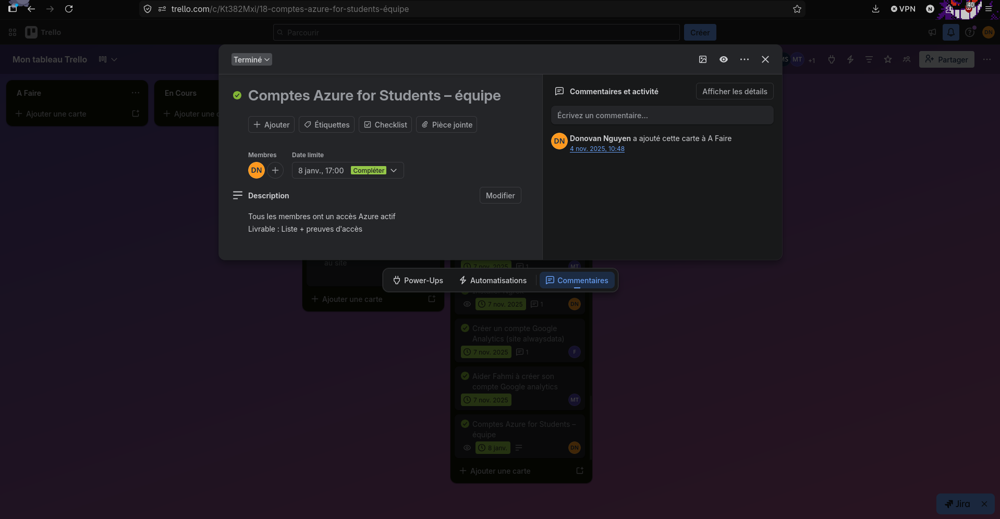

Planification des activités d’un projet
Réalisation professionnelle
Planification des activités d’un projet hackathon BTS SIO en qualité de chef de projet.
Compétence mise en œuvre
C14 - Planifier les activités.
Contexte
Dans le cadre d’un hackathon BTS SIO, notre équipe devait concevoir et déployer une solution complète comprenant plusieurs volets techniques : un service GLPI, une API REST connectée à une base de données, un frontend consommant l’API et un Plan de Reprise d’Activité simulant une restauration après incident.
L’équipe était composée de plusieurs profils avec des rôles différents : backend, frontend, infrastructure et support. Cela nécessitait une organisation claire afin d’éviter les blocages et de garantir l’avancement du projet.
Problématique
Le projet comportait plusieurs dépendances techniques importantes. La base de données devait être prête avant l’API, l’API devait être stable avant l’intégration frontend, et le PRA nécessitait un environnement fonctionnel.
Un retard sur une tâche importante pouvait donc bloquer plusieurs membres de l’équipe. Il fallait alors organiser les activités, répartir les rôles et suivre l’avancement de manière régulière.
Démarche suivie
1. Découpage du projet en tâches
J’ai commencé par découper le projet en tâches plus simples et plus faciles à suivre. Chaque tâche devait être claire, attribuée à un membre de l’équipe et associée à un objectif vérifiable.
2. Prise en compte des dépendances techniques
J’ai identifié les dépendances entre les différentes parties du projet. Par exemple, l’API dépendait de la base de données, et le frontend dépendait de l’API. Cela a permis de prioriser les tâches bloquantes.
3. Utilisation d’un tableau Trello
Pour suivre l’avancement du projet, nous avons utilisé un tableau Trello organisé sous forme de Kanban. Les tâches étaient réparties dans plusieurs colonnes : backlog, à faire, en cours, en revue et terminé.
4. Suivi par séance
À chaque séance, les objectifs prioritaires étaient définis. En fin de séance, un point rapide permettait de mettre à jour l’avancement, de vérifier les tâches terminées et de réajuster la planification si nécessaire.
Résultats obtenus
- Les responsabilités de chaque membre étaient plus claires.
- Les tâches importantes ont été priorisées selon les dépendances techniques.
- Le tableau Trello a permis de suivre l’avancement du projet.
- Les objectifs de séance étaient plus faciles à contrôler.
- La coordination de l’équipe a été améliorée.
Outils utilisés
Captures et preuves
Les preuves à ajouter peuvent montrer le tableau Trello, les cartes de tâches, la répartition des rôles ou les objectifs de séance.

Tableau Trello utilisé pour suivre les activités du projet

Cartes de tâches avec responsables et avancement
Conclusion
Cette réalisation m’a permis de comprendre l’importance de la planification dans un projet technique.
En tant que chef de projet, j’ai dû organiser les tâches, anticiper les dépendances, suivre l’avancement et adapter la planification selon les besoins de l’équipe.
Cette compétence est importante car elle permet de structurer le travail, d’éviter les blocages et de mieux coordonner les membres d’un projet informatique.